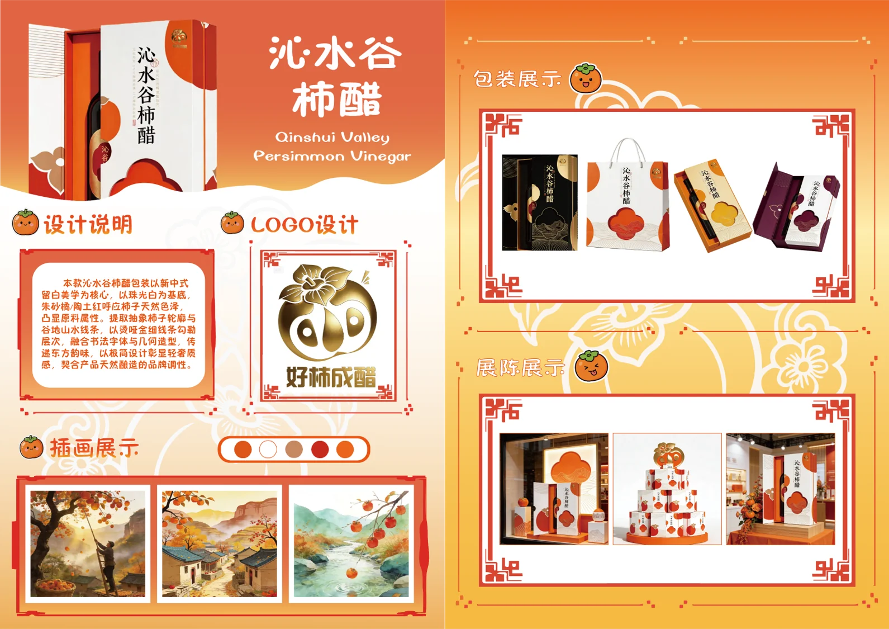

05 / Packaging
沁水谷
柿醋包装
新中式留白美学。以柿子轮廓与谷地山水线条为图形母题，珠光白底压朱砂橘与陶土红，LOGO 取谐音「好柿成醋」。
- 类型
- 包装设计 / LOGO
- 年份
- 2026
- 工具
- CorelDRAW · Illustrator · Photoshop
- 内容
- 礼盒 · 单瓶 · 手提袋 · 陈列

Background / 项目背景
沁水谷是一个做柿子醋的农产品品牌。产品本身很传统，但如果包装做得也传统，就会和货架上一排排土特产一起沉下去。这次的方向是用极简的现代骨架，装东方的内容。
Concept / 概念
核心是留白。整块版面上大约有一半是空的——珠光白做底，只在必要的位置落色。柿子被抽成一个几何化的圆形轮廓，谷地被抽成一组起伏的山水线条，两者在空中相交，构成主视觉。
LOGO 做的是谐音：「好柿成醋」——把「好事成双」的语感挪到产品上，一眼就能记住，也顺带解释了它是什么。
Color / 色彩
三色体系：珠光白（底）、朱砂橘（柿子本体）、陶土红（暗部与结构线）。橘与红之间的差距做得很小，靠明度而非色相拉开层次，避免变成"红红火火"的节庆感。
Craft / 工艺
盒面上的层次全部用烫哑金细线勾出，配合书法字体与几何造型。金线很细，远看几乎看不见，近看才浮出谷地的等高线——这是整个方案里我最有把握的一处细节。
留白不是空着，是把注意力让给该被看见的那一件事。
落地部分包含礼盒、单瓶装、手提袋与陈列道具，配色在四种物料上保持一致，形成统一的货架识别。
Board / 完整展板
展板呈现包装展示、设计说明、LOGO 设计、插画展示、色彩与陈列五个部分。